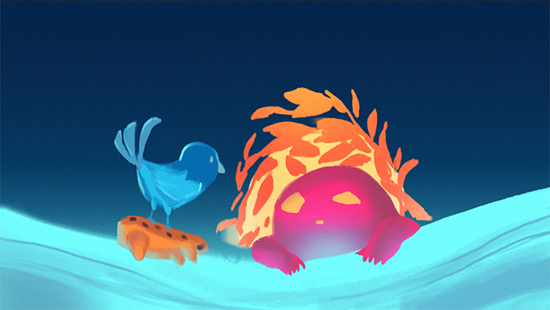
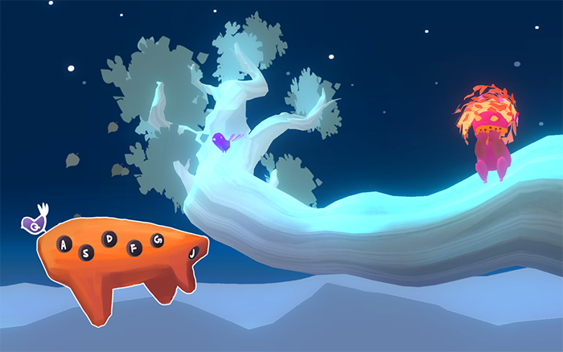
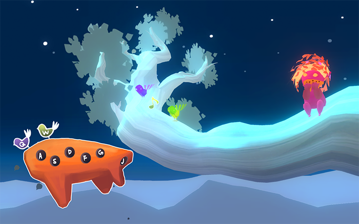

[Play it here.]
<Role: programmer, 2D artist, audio designer>
Oca's Birds is a music game in which the player controls the lonely Oca, who discovers an ocarina that can communicate with birds. Help Oca befriend all the birds by playing the ocarina!
The player uses the keyboard to follow randomly generated music on the pentatonic scale.
This was an assignment where a group of two would take an existing student project and continue its development. When we inherited the project, the game already had a very strong visual identity with the 3D models already made and color palettes chosen. The flute mechanic was there too, yet unpolished and more toy-like, with only one fixed song to play.
Our challenge was to make the game a more "whole" experience, with start to finish. We introduced a narrative using beginning and ending cutscenes, and additional birds that marked specific points in a song to show progression. The song itself was also procedurally generated, while retaining the original's quality.
My personal challenges were 1) to make the song still sounded good even when random, which meant careful attention to the audio design, and 2) sustaining the previous student's original artistic vision. The former was also relevant when composing the intro song. The latter was quite the limitation I placed on the project, as it meant I couldn't change the actual "look" of the game. Instead, I worked around it: implementing a more direct UI to indicate progression and give feedback to the player, and replicating the art style for any 2D or 3D additions.
Screenshots:
  
Made with Unity3D; collaboration with Ben Costrell and Shelley Chen at NYU Game Center under Bennett Foddy.